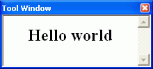
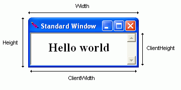
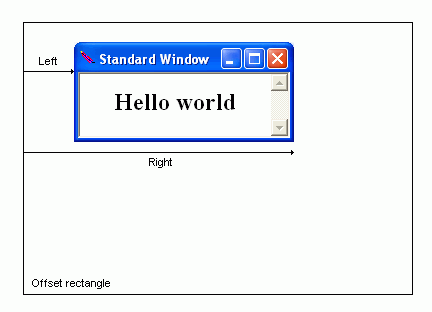
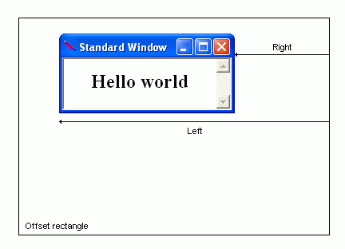
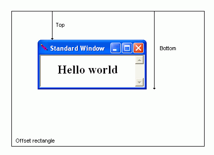
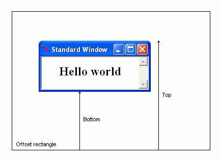
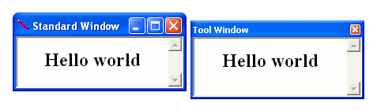

Configuration Directives

|
Configuration Directives
|
|
|
Window Directives
|
These directives control the appearance and behavior of a browser window. They always appear in directive blocks enclosed by one of following tags: Each directive block is associated with a name pattern, specified in the open tag. Wapache apply a block to a given window if the name of that window matches the pattern. In the following example, both "popup_warning" and "popup_error" will use the settings in the
<StandardWindow "main">
Width 80% Height 80% </StandardWindow> <ToolWindow "popup_.*"> Width 2in Height 4in </ToolWindow> A Standard Window behaves like a regular browser window. The user can maximize, minimize, and resize it (unless these features are explicitly turned off). For every standard window there is a button in the Task Bar. Each one also gets a slot in the Task Switch (Alt-Tab) window. A Tool Window has a more diminative title bar than regular windows. It can not be maximized or minimized and usually are not resizeable. It also does not have an icon for activating the system menu. Tool windows are designed for floating tool bars and for displaying information supplemental to contents in a Standard Window. It is "owned" by the window that opened it. When the opener closes, so does the tool window. When the opener is minimized, the tool window becomes hidden. When a tool window has the keyboard focus, its opener will still appear to be active. In essence, a tool window is an extended part of a standard window. Like a Tool Window, a Dialog Box is also an owned window. It will close when its opener closes. A Dialog Box can be modeless and modal. A modal Dialog Box does not yield control back to its opener until the user closes it. Both Tool Windows and Dialog Boxes will always appear in front of their openers. There are two ways to specify the size of a window. You supply the actual size of the window using the Width and Height directives, or you can specify the size of the document view using the ClientWidth and ClientHeight directives (see figure below). The second pair is useful when the HTML contents to be displayed have a a fixed pixel size. 
The dimensions can be specified in number of pixels (px), number of scaled pixels (sx), inches (in), or percentage. A scaled pixel is the length of a pixel at Windows's default resolution of 96 DPI (dots per inch)–i.e. 1/96 of an inch. If the end user's display device has a higher resolution, Wapache would adjust the dimensions of the window so that it is of roughly the same size on screen as it were at 96 DPI. When specifying dimensions in inches, you must provide integers. Wapache does not recognize numbers with decimals. For finer control, use the scaled pixel. Dimensions specified in percentage are calculated based on the width and height of the desktop area–that is, the screen area minus the Windows Task Bar. Four directives are available for specifying the location of a window: Left, Top, Right, and Bottom. Most of the time you would not be using all four. You would just specify the window's height and width and then the location of one of its corners. The figures given in these directives are not screen coordinates. They are offsets from the window's offset rectangle. The offset rectangle for a Standard Window is the desktop area. The offset rectangle for a Tool Window or a Dialog Box is the area occupied by its opener (or the desktop area if it was not opened from another window). The HorizontalAlign and VerticalAlign directives affect how the figures are interpreted. When HorizontalAlign is set to "Left," they are distances from the left edge of the offset rectangle: 
When HorizontalAlign is "Right," they are distances from the right edge of the offset rectangle: 
When HorizontalAlign is "Center," both Left and Right are ignored. Wapahce will simply center the window in the offset rectangle. The effect of VerticalAlign on Top and Bottom are analogous. When VerticalAlign is "Top": 
When VerticalAlign is "Bottom": 
You would always place Standard Windows inside its offset rectangle. Otherwise it would be outside the desktop area and not be visible. The offset rectangle of a Tool Window, on the other hand, is the area of its opener. In this case you might want to position the window outside of its offset rectangle, so the windows do not overlap. For that you need to use negative numbers. The following example places a Tool Window next to a Standard Window, 5 pixels away and 10 pixels lower: 
<ToolWindow "tools">
HorizontalAlign Right VerticalAlign Top Left -5px Top 10px Left 5px Width 220px Height 100px </ToolWindow> Changing HorizontalAlign to "Left" and setting Right to -5px would place the Tool Window on the other side. When FullScreen is turned on, all window placement directives are ignored–the window will simply fill up the whole screen. You can give your application a more unique appearance with a custom window frame. First, turn off the system window frame with the Frameless directive, leaving only the HTML document visible on screen. Then create then custom frame within the HTML document, using a combination of CSS, Javascript, and images. Example:
<StandardWindow Main>
Left 10% Top 10% Height 100px Width 220px Frameless On ScrollBar Off 3DBorder Off RoundedCorners 10px </StandardWindow> Use the scripting methods exposed through the External Object to implement features normally provided by the system window frame, such as minimizing, maximizing, and moving.
The 3DBorder directive turns off 3-D borders for all frames (iframes included). Use the InnerBorder to turn off the border around the main document.
Normally when the user right-clicks on a hyperlink, Internet Explorer's hyperlink context menu appears, with the options to "Open in New Window," "Save Target As," and so on. The AnchorContextMenu directive lets you supply a custom menu tailored to your application. The menu-name argument refers to a <Menu> directive block, where the menu items are defined. Javascript: Menu items are not context aware at the DOM level. A ScriptMenuItem, for example, will always invoke a method of the
window object, even in this case, when context menu was opened for a specific element. If the action performed is element specific, attach a handler to the oncontextmenu event and save a reference to event.srcElement in a global variable.
Microsoft's Intelliforms™ technology aids users in filling out forms in Internet Explorer. The AutoComplete directive determine whether this feature is available in a Wapache browser window as well. Need to confirm behavior; might not work at all. - Chung
The Bottom directive is used to set the bottom position of a window. If VerticalAlign is "Bottom," distance is interpreted as that from the bottom of the window to the bottom of its offset rectangle. If VerticalAlign is "Top," then it is the distance from the bottom the window to the top of its offset rectangle. For Standard Windows, the offset rectangle is the desktop area. For Tool Windows and Dialog Boxes, it is the area occupied by the opener window. Pixel length is assumed if no unit is specified. See Window Placement for more information.
Normally when the user right-clicks on a input field, the standard edit context menu appears, with the options to "Copy," "Paste," and so on. The ControlContextMenu directive lets you supply a your own solution. The menu-name argument refers to a <Menu> directive block, where the menu items are defined. You must provide definition for every item in this menu. There is no way to add an item to the existing menu. The directive block for the standard edit menu is shown below.
<Menu edit>
BasicMenuItem "Undo" _this IDM_UNDO MenuSeparator BasicMenuItem "Cut" _this IDM_CUT BasicMenuItem "Copy" _this IDM_COPY BasicMenuItem "Paste" _this IDM_PASTE BasicMenuItem "Delete" _this IDM_DELETE MenuSeparator BasicMenuItem "Select All" _this IDM_SELECTALL </Menu>
The DefaultContextMenu directive sets the context menu for elements that do not require a more specialized menu. The following table lists those that do with the coresponding directive.
menu-name refers to a <Menu> directive block, which contains the menu item definitions
The DropDownMenu directive assigns a menu to a window. Top level items will appear across the top of the window. Submenus will drop down from this menu bar. menu-name refers to a <Menu> directive block, where the menu items are defined.
The ClientHeight directive lets you specify the desired height of the HTML document view port. Wapache would then calculate the necessary height the window should have in order to accommadate it. This is an alternative to the Height directive, which sets the actual height of the window. If not unit is given, pixel length is assumpted See Window Placement for more information.
The ClientWidth directive lets you specify the desired width of the HTML document view port. Wapache would then calculate the necessary width the window must have in order to accommadate it. This is an alternative to the Width directive, which sets the actual width of the window. If not unit is given, pixel length is assumpted See Window Placement for more information.
DialogBox is a container for directives that affect the appearance and behavior of a web browser window. name-regex is a regular expression. Directives in the block are applied to a window if its name matches the pattern. A match in this case means the full name must fit the pattern. This is constrast to how regular expressions are normally used in Apache, where a pattern would only need to macth some portion of the test string. Wapache automatically adds the start-of-string (^) and end-of-string ($) meta-character to the pattern. You need to put wildcard meta-character in the pattern if you wish to use the same directive block for different windows. By default a Dialog Box is modeless. See Window Types for more information.
The FlatScrollBar directive makes the scroll bars a flatter. They will still have a slight 3-D appearance.
The Frameless directive turns off the default window frame provided by the operation system. A flameless window shows just the document view port. You are expected to provide a frame in the HTML document, at well as implement missing functionalities like window moving and closing in Javascript. Use the RoundedCorners to round off the window's sharp corners. While it is possible to add a drop-down menu to a frameless window, it is not recommended–it would look stupid. Currently it is not possible for the user to resize a frameless window. The Resizeable directive is ignored when Frameless is on. MaximizeButton, MinimizeButton, and HelpButton are also ignored. SystemMenu still has an effect, however, as the system menu is available through the Task Bar. For an example, see the Custom Window Frame section.
The FullScreen directive makes a window fill up the whole screen. When it is set to On, all window positioning directives are ignored. If the window has a drop down menu, it will apppear at the top of the screen. You should provide a way for the user to close the window, as the standard close button will not be available. Currently it is not possible to switch between full-screen and non-full-screen operation.
The Height directive sets the actual height of the window. This height includes the height of the the title bar and that of the menu bar if one is present. Depending on the font settings, Windows version, and current GUI theme, the height of the document view can vary between computers. Consider using the ClientHeight directive instead, if it is desirable to maintain a consistent view port size. If not unit is specified, pixel length is assumed. See Window Placement for more information.
The HelpButton directive places a button with a question mark on the window's title bar. When the user clicks on it, the mouse cursor becomes a pointer with a question mark. When he/she clicks on an element in the HTML document, an
The HorizontalAlign directive changes the meanings of Left and Right. See Window Placement for more information. Note that the default value for DialogBox is "Center," while it is "Left" for the other two window types
The icon path is relative to the directory path of the configuration file. Currently only .ICO files can be used.
The InnerBorder directive can be used to turn off the border around the HTML document view. If the document has frames, they will retain their borders–in contrast with the 3DBorder directive, which turns off all borders. Platform note: This directive only works if Internet Explorer 6 and above is install on the end user's computer.
The Left directive is used to set the left position of a window. If HorizontalAlign is "Left," distance is interpreted as that from the left of the window to the left of its offset rectangle. If HorizontalAlign is "Right," then it is the distance from the left the window to the right of its offset rectangle. For Standard Windows, the offset rectangle is the desktop area. For Tool Windows and Dialog Boxes, it is the area occupied by the opener window. Pixel length is assumed if no unit is specified. See Window Placement for more information.
Only Standard Windows can have a maximize button. A window cannot have both a minimized button and a help button.
The Maximized directive determine whether the window should be maximized initially. Only Standard Windows can be maximized. Even if you switch off MaximizeButton, the user can still "demaximized" a window by double clicking on the title bar.
Only Standard Window can have a minimized button. A window cannot have both a minimized button and a help button.
The Modal directive makes a Dialog Box modal–that is, the window will not yield control to the window underneath while it remains open. You can close a window programmatically by using the After the user has submitted a form in the Dialog Box, you may need to update information displayed in the parent window. The easiest way to do this is to add an X-Command-Before header to the HTTP response with the command "Basic _opener IDM_REFRESH."
The Resizeable directive deterimes whether a window is resizeable or not. By default, only Standard Windows can be resized. Through this directive you make a Tool Window or Dialog Box resizeable as well; or vice-versa, make a Standard Window not resizeable. A resizeable window has a slightly thicker border than one that is not resizeable This directive has no effect when Frameless or FullScreen is on.
The Right directive is used to set the right position of a window. If HorizontalAlign is "Right," distance is interpreted as that from the right of the window to the left of its offset rectangle. If HorizontalAlign is "Right," then it is the distance from the right the window to the right of its offset rectangle. For Standard Windows, the offset rectangle is the desktop area. For Tool Windows and Dialog Boxes, it is the area occupied by the opener window. Pixel length is assumed if no unit is specified. See Window Placement for more information.
The RoundedCorners directive lets you round off the sharp corners of a frameless window. While it possible to do the same to regular windows, the resulting appearance would be very odd. The heightand width arguments are for the full ellipsis, even though each corner is just one quantrant of it. So a rounded corner that is 5 pixels wide requests a width of 10 pixels. You can think of it as the ellipsis being cut into four pieces, which are then placed at each corner. height is optional. When omitted the corner is circular, with width being the diameter.
The ScrollBar directive can be used to turn off the web browser's unsightly scroll bars. By default the browser shows a vertical scroll bar, even if the document does not require scrolling. If the document body's scroll attribute is set to "auto," the layout would still reserve space for the scroll bar. Setting setting ScrollBar to off turns off the scrolling completely. Note: Setting ScrollBar to Off will turn off scrolling with the mouse wheel or arrow keys as well. Use this directive only when you know the HTML contents are not going to overflow the view port.
StandardWindow is a container for directives that affect the appearance and behavior of a web browser window. name-regex is a regular expression. Directives in the block are applied to a window if its name matches the pattern. A match in this case means the full name must fit the pattern. This is constrast to how regular expressions are normally used in Apache, where a pattern would only need to macth some portion of the test string. Wapache automatically adds the start-of-string (^) and end-of-string ($) meta-character to the pattern. You need to put wildcard meta-character in the pattern if you wish to use the same directive block for different windows. See Window Types for more information.
The system menu is the menu activated by clicking on the icon at the a window's upper left-hand corner. If it is turned off, the icon will disappear as well. When MaximizeButton or MinimizeButton is set to On, the window will have a system menu regardless of what is specified by this directive.
The ToolWindow is a container for directives that affect the appearance and behavior of a web browser window. name-regex is a regular expression. Directives in the block are applied to a window if its name matches the pattern. A match in this case means the full name must fit the pattern. This is constrast to how regular expressions are normally used in Apache, where a pattern would only need to macth some portion of the test string. Wapache automatically adds the start-of-string (^) and end-of-string ($) meta-character to the pattern. You need to put wildcard meta-character in the pattern if you wish to use the same directive block for different windows. See Window Types for more information.
The Top directive is used to set the top position of a window. If VerticalAlign is "Bottom," distance is interpreted as that from the top of the window to the bottom of its offset rectangle. If VerticalAlign is "Top," then it is the distance from the top the window to the top of its offset rectangle. For Standard Windows, the offset rectangle is the desktop area. For Tool Windows and Dialog Boxes, it is the area occupied by the opener window. Pixel length is assumed if no unit is specified. See Window Placement for more information.
The VerticalAlign directive changes the meaning of Top and Bottom. See Window Placement for more information. Note that the default value for DialogBox is "Middle," while it is "Top" for the other two window types
The Width directive sets the actual Width of the window, including the thickness of its border. A alternative to this directive is ClientWidth If not unit is specified, pixel length is assumed. See Window Placement for more information. |
|||||||||||||||||||||||||||||||||||||||||||||||||||||||||||||||||||||||||||||||||||||||||||||||||||||||||||||||||||||||||||||||||||||||||||||||||||||||||||||||||||||||||||||||||||||||||||||||||||||||||||||||||||||||||||||||||||||||||||||||||||||||||||||||||||||||||||||||||||||||||||||||||||||||||||||||||||||||||||||||||||||||||||||||||||||||||||||||||||||||||||